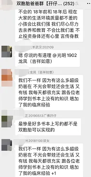
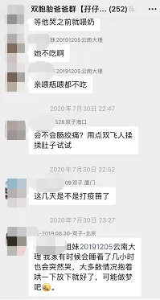
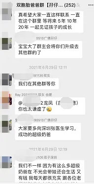
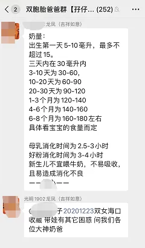
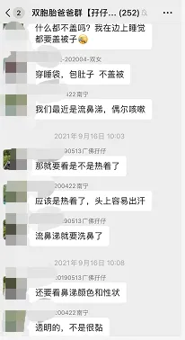
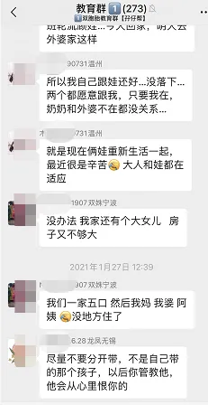
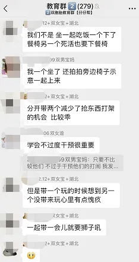
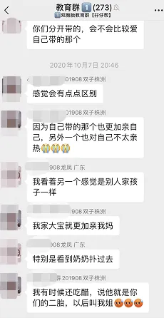
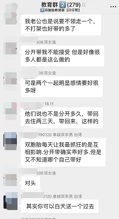

孖仔帮
公众号ID：twinsbang
关注
文|圆圈妈
网图|侵删
1
上周私信里收到的一个问题：想把双胞胎给两边老人各自带一个，不知道行不行？
先不说可不可以，我就纳了个闷：这娃儿们的爹妈呢？哪去了？
说好的，父母是养育第一责任人呢？
就我说，哪怕只有一口气在，再苦再难也不要把双胞胎分开养。可是，很多人会说，我实在是没有办法啊。
是真的吗？
嗯，还真的是！
“未经他人苦，莫劝他人善”，把双胞胎分开带，真的有很多万不得已的苦衷。我卧底在双胞胎社群长达3年，看着各种颠覆三观的吐槽，说来说去不外乎就以下这5个理由。
在自己爹妈面前还是个长不大的孩子，更没有带娃经验，只能依靠老人，家里一口气来了两个宝宝，两边老人抢着带，为了公平起见，只能一边放一个。
家里没有矿，双职工家庭伤不起，现在养孩子的经济压力太大，靠一个人上班养活全家是杯水车薪，但两个人都要上班，势必没有精力去照顾两个孩子，不得不把孩子分开寄养在奶奶和外婆家。
同时带两个孩子太辛苦了，不是一般人能想象到。一个接一个地喂饭、一个哭，另一个孩子也跟着哭；一个孩子感冒了，另一个得赶紧想办法“隔离”；照顾一个生病的孩子都已经筋疲力尽了，更别说是两个。
错综复杂的家庭关系，两个人的婚姻一旦有了孩子，就是两大家庭的事，两边老人都想带娃，但不想同在一个屋檐下，外里客客气气，内里叽叽歪歪，双方都暗自较劲，憋出内伤，只好分开各自带一个，眼不见为净。
二胎来了双胞胎，老大很可怜，家里又太小，不够住，面对两个婴儿和一个幼儿，这注定是鸡飞狗跳的生活，照顾两baby吃喝拉撒睡的同时还要兼顾老大脆弱敏感的幼小心灵，生怕他对弟弟妹妹产生敌意以及对父母有愤恨之心。
把双胞胎分开养，貌似轻松了很多，有时间赚钱了，没那么累了，但你可知双胞胎分开带的弊端？
老人家会各宠各的，对不是自己养的那个不上心，两孩子也会各亲各的，对不常接触到的其他亲人很生疏。
不在身边养的那个孩子会有被抛弃感，会对父母有怨恨之心，会对另一个有嫉妒之心，养在身边的那个孩子自认被特别优待，对另一个有鄙视之心或者觉得自己是牺牲了别人充满了愧疚和负罪感。
夫妻长期分居，影响夫妻感情，两孩子们也无法得到完整的父爱和母爱，会影响正常的心理发育。每个月互换一次更不可取，对孩子来说，一边养熟了，又被换过来，会让孩子无所适从。
更重要的是，这对两个孩子来说，首先缺少的是父母陪伴，其次是那个从受精卵开始就在一起的纯天然小伙伴也跟自己分离了，不啻于双重打击。
2
话说，双胞胎没人带或者带不来，那种寸步难行的窘境，我也曾经历过。
这种苦是一种心梗，就好像被人掐住喉咙，呼吸不了那种，怕是这辈子都无法释怀了。
但即便如此，我和圆圈爸当年也是目标一致，力排众难，冲破了重重障碍，才终于把圆圈哥俩留在身边带。
而我为了保住工作，稳住老人在深带娃，留着两孩子在身边，也改变了很多，牺牲了很多；掉了不少眼泪，吃了不少苦头；隐忍着，憋屈着；崩溃过，绝望过...
然而，一切都值得！
因为事实证明，我们的决定是对的。
没有年龄差异的兄弟俩一起成长，一起生活，一起学习...交流沟通也容易得多，手足之情比一般兄弟姐妹还要深厚；在这样一个独特的小世界里，他们比其他同龄小朋友更容易学习到如何分享、谦让、合作、竞争等同伴交往概念、技能。
我想，如果当初硬生生地把两兄弟分开，不仅这些优势变少，也不利于孩子们之间感情的培养。
所以，特别想对新手双胞胎父母说：即便双胞胎没人带，也坚决不分开带，办法总比困难多，天无绝人之路。
没人带，钱可以解决问题；分开带导致的一系列问题，有些是不可逆的，怕是用钱都弥补不了。
3
好了，大BOSS来了：不分开养，必须在一起带，两个娃谁来带？宝爸宝妈的事业与家庭如何衡量？
我认为，最好的方案是：除非有特别好的机会，也不特别影响你照顾孩子，在双胞胎入园之前，如果有可能，宝妈最好在孩子三岁之前，在家带娃，先不要工作。
不管是一人带俩娃，还是有家人搭把手，均需保证双胞胎的身边有一个值得建立依恋关系的照料人，而这人首选是妈妈。
当然，这人也可以是宝爸。
不知道我这样说会不会让个别妈妈忍不住摇头，暗自发笑，觉得不可能，毕竟现在的宝爸大都流行崩溃、蹲坑、装病...
但咱们双胞胎爸爸可不一样，在我们孖仔帮的双胞胎奶爸群，就有一大波在家带双胞胎的全职奶爸，一边工作一边搞俩娃，基本上能达到全国统一的带娃标准。
左右滑动查看更多
请相信，这年头，母猪都能上树，男人带起娃，女人都得靠边站。（不信？那就来我们的双胞胎爸爸群一探究竟吧！）
我知道，这个建议有点站着说话不腰疼，但根据这6年来一路摸滚带爬与两个儿子双打混战的育儿经验，我不得不说：养育双胞胎最关键的是前三年，所有行为习惯一旦建立好模式，亲子关系打好基础，后面的教养问题会轻松不少。
具体实例，后期推文会写一个系列分享给大家，今儿个，再划下重点：最困难的是前三年，最关键的也是前三年，这三年只要是与双胞胎一起熬过来，共同经历过大事小事，屁事破事...后面的日子遇到再大的风浪都不是事。
这大概能解释为什么总有很多前辈都喜欢意味深长地说一句话：“养双胞胎嘛，就是前面吃多点苦，后面就是甜到腻，香到爆。”
有良好亲子关系助阵，养育双胞胎并不难，而构建良好亲子关系的前提就是把双胞胎带在父母身边，坚决不分开养。
4
如果双胞胎被迫分开，等到了某个节点，如上幼儿园，上学，再把双胞胎接回家，两个孩子重聚了，要怎么做呢？
你一定想不到，这对大人和两孩子来说，又是一种煎熬。因为亲情的陌生，新环境的陌生，以及在面对概念中的手足时，那种不安，猜疑，甚至嫉恨...都会让两孩子在心理埋下阴影。
因此，双胞胎重逢后，父母要多创造机会让两孩子尽快地亲近起来，而游戏就是一个很好的契机。
游戏可以激发孩子的天性，可以培养两孩子之间合作的态度，轮流的秩序，甚至是民主的意识，通过游戏来熟悉彼此，同时构建融入两宝后的家庭相处新模式。
请相信，血浓于水，孩子本来就自来熟，更何况，他们是亲手足，父母只要引导得当，重建亲密的手足关系也不是难事。
更多精彩分享和经验交流，请加入我们的双胞胎教育群，欢迎家有双胞胎18个月以上的爸爸妈妈来组织探讨切磋，公众号输入社群，获取入群方式。
左右滑动查看图集
兄弟姐妹就像一件礼物，一件一辈子的礼物，相比其他小孩，双胞胎的手足之情得天独厚，何其幸运啊。
从小胚芽开始就有个贴心的伴陪伴着彼此在寂寞无聊的子宫里生长发育，然后呱呱坠地，一起长大成人，分享成长中的喜怒哀乐…
当别的小孩还在发愁找不到玩伴时，双胞胎孩子已经有了固定的小伙伴一起哭，一起笑，一起闹…
这是孩子们多么弥足珍贵的成长历程啊！
真心呼吁双胞胎家庭，再苦再难都不要把双胞胎孩子分开带！
今日互动话题
#你们家的双胞胎谁在带呢？#
评论区聊一聊呗！
微信公众号：孖仔帮
ID : twinsbang
专注双胞胎孕育，养育，教育经验分享
扫码关注我们










